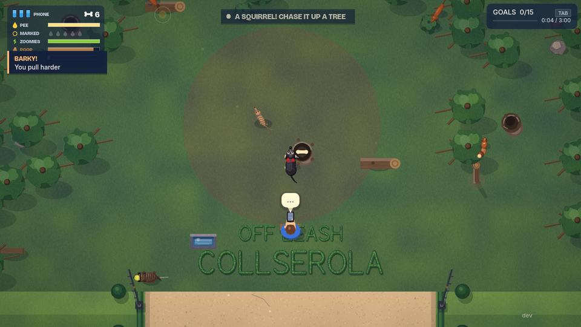

El Laberint d'Horta
The cypress maze
Barcelona's oldest park tucked against Collserola's foot: tall clipped cypress hedges winding round marble statues, quiet mossy ponds and Eros standing in the heart of the maze before climbing out into the pines.
- Off-leash stop
- COLLSEROLA (Wooded clearing)
- Beat the clock
- Under 3:00
Screenshots



Goals (15)
- Mark 5 spots
- Have 4 good long sniffs
- Get the phone home without a scratch
- Get yourself home without a bump
- Get your business bagged
- Bring the ball back 3 times
- Bring Tofu the cat home
- Have a good long drink
- Tetherball your human around a pole
- Steer your human around Eros in the maze
- Land an x3 trick combo
- Snatch the gardener's bocadillo off his barrow
- Spell LEASH
- Find the hidden pernil
- Beat the clock (under 3:00)